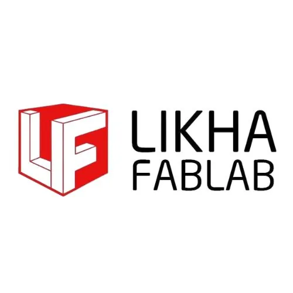

LIKHA FabLab
Batangas State University · Region IV-A
LIKHA FabLab — which stands for Labspace for Innovation, Knowledge-Honing and Application — is a digital fabrication laboratory hosted by Batangas State University (The National Engineering University) at its Alangilan Campus in Batangas City. Established on December 27, 2018 as a Department of Trade and Industry (DTI) Shared Service Facility (SSF), LIKHA FabLab is housed at the ground floor of the STEER Hub Building at BatStateU and serves Region IV-A (CALABARZON).
- Category
- Fabrication Laboratory (FabLab)
- Host institution
- Batangas State University
- City
- Batangas City
- Region
- Region IV-A
- Operating status
- Operating
About the Center
LIKHA FabLab was designed to strengthen product design and prototyping capabilities for MSMEs, students, entrepreneurs, and local innovators across Batangas and CALABARZON — bringing state-of-the-art digital fabrication machinery and technical expertise to those who would otherwise lack access to advanced manufacturing tools. Its focus industries include furniture-related manufacturing, electronics, and other product-based industries prominent in the region.
The lab demonstrated its community impact during the COVID-19 pandemic in 2020, when LIKHA FabLab mobilized its equipment to produce face shields for frontline health workers in Batangas Province — showing how FabLabs can rapidly respond to community needs beyond their regular services.
Programs & Services
- 3D Printing — Access to eleven (11) 3D printers for rapid prototyping of product designs, replacement parts, models, and physical mockups across a range of materials
- Laser Cutting & Engraving — Wood and acrylic laser engravers/cutters for precision work on signage, decorative elements, packaging prototypes, and enclosures; plus a metal laser engraver for industrial marking applications
- CNC Milling — Computer numerical control milling machine for precision machining of parts in wood, acrylic, and soft metals for product prototyping and small-batch manufacturing
- Vacuum Forming — Vacuum forming machine for creating custom plastic shells, product casings, trays, and packaging components from thermoplastic sheets
- Vinyl & Decal Printing — Decal/sticker printer and cutter plotter machine for producing custom labels, decals, branding materials, and vinyl cut designs
- Electronics Testing & Workspace — Multimeters and oscilloscopes for basic electronics testing, supporting MSMEs and innovators working with electronic components and IoT products
Contact
Sources & references
- batstate-u.edu.ph/research-and-extension/support-system/likha-fablab
- mb.com.ph/2018/12/29/dti-batangas-state-u-unveil-likha-fablab
- dti.gov.ph/archives/regional-archives/region-4a-success-stories-regional-ar…
Details are drawn from public records and the sources above, July 2026.
Startupreneur Innovation Hub · synced from the Notion catalog (July 2026) · status: published.